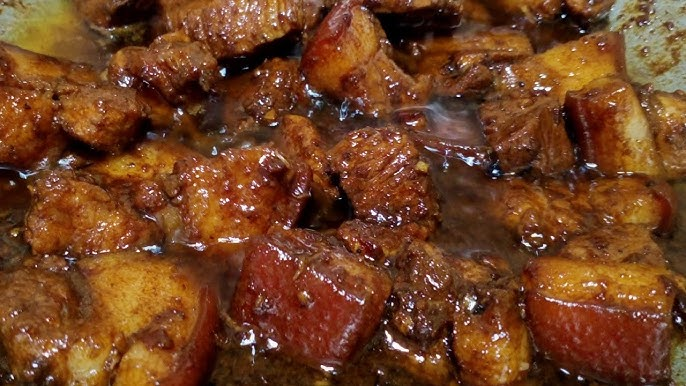

Adobong Baboy Recipe

Description
A classic Filipino dish made with pork braised in soy sauce, vinegar, garlic, and spices. It's savory, slightly tangy, and aromatic.
- 1 kg pork belly, cut into cubes
- 1/2 cup soy sauce
- 1/2 cup vinegar
- 6 cloves garlic, crushed
- 2 bay leaves
- 1 tsp black peppercorns
- 1/2 cup water
- 2 tbsp cooking oil
- Salt and pepper to taste
Steps
- Marinate pork in soy sauce and garlic for at least 30 minutes.
- Heat oil in a pot, then brown the pork.
- Add the marinade, vinegar, bay leaves, peppercorns, and water. Do not stir.
- Simmer covered for 40-50 minutes until pork is tender.
- Uncover and simmer until the sauce thickens. Season with salt and pepper.